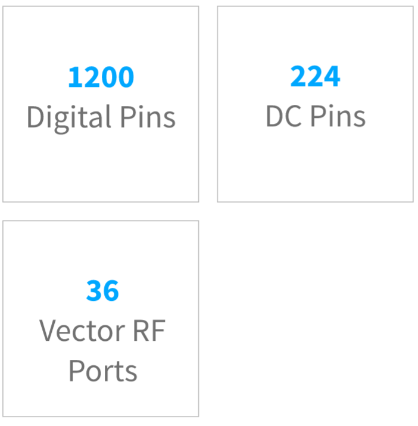

Unlimited Test Capability

Quite simply, our test platforms offer the industry’s broadest frequency and application range on the market. As the technology pushes for higher performance and wider frequency capabilities, be ready with Cassini.
CASSINI 16

| height | 5.9ft | 1.8m |
| footprint | 5.9ft | 1.8m |
| weight | 220lbs | 99kg (equipped) |
| electrical | 100 to 220 VAC |
| consumption | < 1 kW/hr |
16 instrument slot test head
precision handler/prober docking
applications from DC to 100GHz
instant multi-site scaling
Cassini marks a new direction towards a completely modular architecture by making every part of the test system configurable. Bred from the same RF-centric foundation as its predecessor, Cassini supports drop-in measurement capability and scalable frequency coverage to provide targeted test resources and combine to build a complete production test solution.
CASSINI SPYDER

| height | 2.4ft | 0.73m |
| footprint | 1.9ft x 2.5ft | 0.58m x 0.76m |
| weight | 95lbs | 43kg (equipped) |
| electrical | 100 to 220 VAC |
| consumption | < 1 kW/hr |
8 or 16 instrument slots
compact, cost-effective form factor
turnkey solutions from DC to 20 GHz
rapid development environment
Higher device complexity, shorter development times, and lower cost of test demand a breed of test equipment that’s more capable, more versatile, and more focused than ever. With Spyder, we’ve slimmed down traditional ATE while keeping all of the production muscle to deliver a completely integrated test solution in a compact size.

Modular, Configurable, Scalable
Cassini’s backplane-less design allows for any instrument in any slot to optimize the test head for multisite, mixed signal topology, and feature expansion with up to:

Modular System Architecture
By fusing 30 years of test system integration with a configurable instrument architecture, Cassini delivers a test solution that scales vertically to meet capacity needs while maintaining a cost effective approach to capture emerging markets and disruptive technology.
Learn MoreDC

Digital

RF

mmWave

Blind Mate Interface
It’s the missing piece that transforms a set of modular instruments into a modular test system. The blind-mate interface creates a unified testhead from DC to millimeter wave without requiring specialized tooling or training. The setup provides a precise and consistent test interface while enabling better access to resources during development, quicker instrument servicing and calibration, and fast changeout in production.

A Smarter Data Bus
Roos Instruments Fast Link(RIFL) is the first open-standard data bus designed specifically for production test. Unwilling to compromise performance or functionality, we designed RIFL as a high-speed data bus and precision instrument power. It supports distributed compute packets across Cassini’s instruments to reduce data payloads and boosting system performance with real-time FPGA processing.